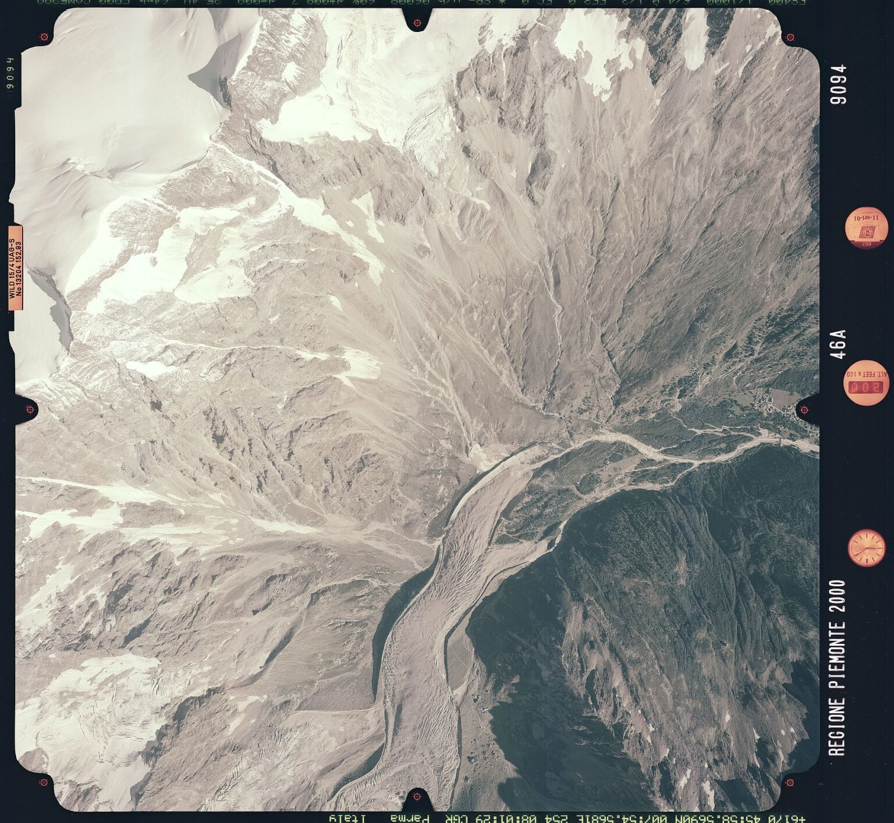
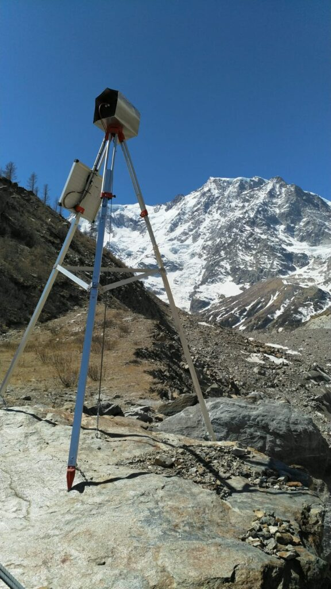

Monitoring project
This project aims at a thorough and accurate 4D monitoring of the Belvedere Glacier with
photogrammetric approaches, exploiting different spatial (from centimetric to metric)
and temporal
resolution (from daily to 10-year periods) and with different platforms (UAVs, aerial
photogrammetry, terrestrial time-lapse cameras).
Since 2015, an extensive and continuous monitoring activity was carried out with
UAVs-based
photogrammetry and in-situ GNSS measurements (Ioli et al, 2022). Every year,
fixed-wing UAVs and
quadcopters were used to remotely sense the glacier and build high-resolution photogrammetric models
in order to estimate annual variations of ice volume and ice flow velocities.
The monitoring activity carried out on the Belvedere Glacier was designed and conducted jointly by
the Department of Civil and Environmental Engineering (DICA) of Politecnico di Milano and the
Department of Environment, Land and Infrastructure Engineering (DIIATI) of Politecnico di
Torino.
The DREAM projects (DRone tEchnnology for wAter resources and hydrologic hazard Monitoring),
involving teachers and students from Alta Scuola Politecnica (ASP) of Politecnico di Torino
and
Milano, contributed to the campaign from 2015 to 2017. 
Moreover, to reconstruct the long-term evolution of the glacier, from 1977 up to now, we used
historical images acquired for regional mapping purposes. Historic analog images were
digitalized
and processed with a modern photogrammetric approach to derive the glacier 3D morphology in 1977,
1991 and 2001 (De Gaetani et al., 2021).
Currently, two time-lapse cameras, permanently installed at the NW glacier terminus, are
being used
to derive daily 3D glacier movements and changes in the ice structures (such as ice falls and
calving events).
Low-cost stereo-photogrammetry and Deep Learning for 4D monitoring of an alpine glacier
Time-lapse cameras are frequently used to retrieve information on glacial flows. However, only one
camera is often employed, preventing photogrammetric reconstructions. To monitor sub-seasonal
movements of the glacier, we designed a low-cost stereoscopic system composed of two
time-lapse
cameras for monitoring the north-west tongue of the Belvedere Glacier.
The stereoscopic system was realized in collaboration with the students of the Kuoleva
Jäätikkö
project of the Alta Scuola Politecnica (ASP).
Each monitoring station includes a DSLR camera, an Arduino microcontroller for camera
triggering,
and a Raspberry Pi Zero with a SIM card for sending images to a remote server. The
instrumentation
is enclosed in waterproof cases. During summer 2021, the two cameras were installed on each side of
the Belvedere Glacier terminal ice cliff and they are currently taking daily images.
Due to the wide baseline (i.e., ∼260 m), traditional feature-based matching techniques (e.g.,
the
ones implemented in software such as Agisoft Metashape and based on SIFT-like descriptors) fail to
find enough homologous points for estimating the orientation of the cameras. State of-the-art
deep
learning matching methods, such a SuperGlue (Sarlin et al., 2020), outperform traditional
feature
based matching techniques. 
Thefore, it was necessary to develop an ad-hoc pipeline for multi-temporal stereo reconstruction
with wide camera baselines: ICEpy4D.
ICEpy4D is a multi-purpose Python package for 4D Image-based Continuos monitoring of glaciers’
Evolution with deep learning SfM and low-cost stereo-cameras and it is available at
https://github.com/franioli/icepy4d
The results of the daily monitoring of the Belvedere Glacier using this low-cost time-lapse camera
system are published at https://link.springer.com/article/10.1007/s41064-023-00272-w